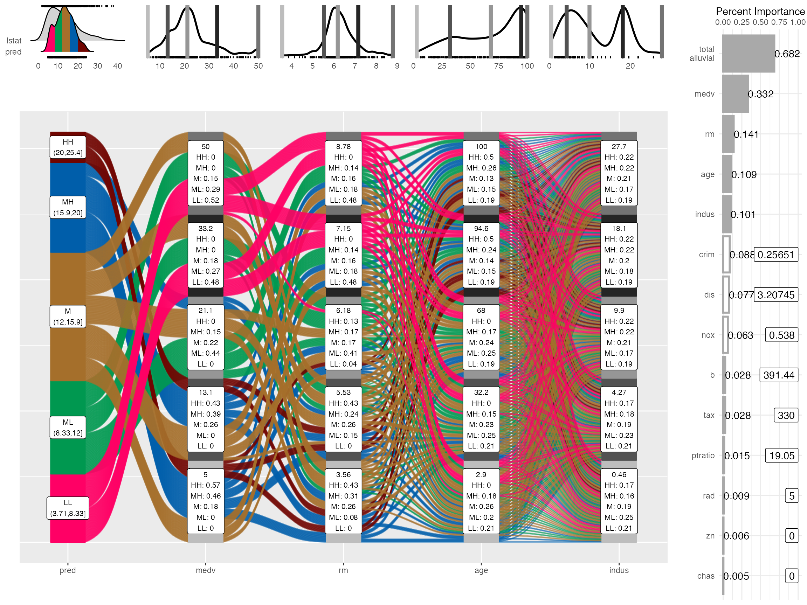
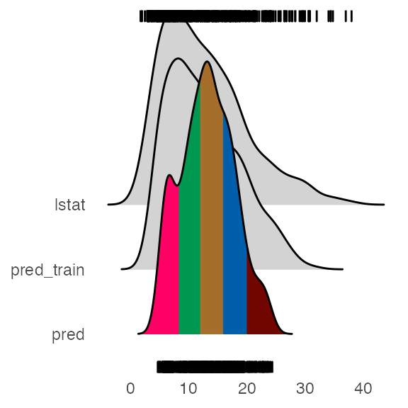
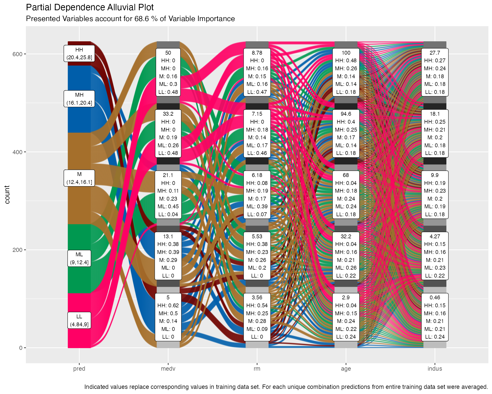
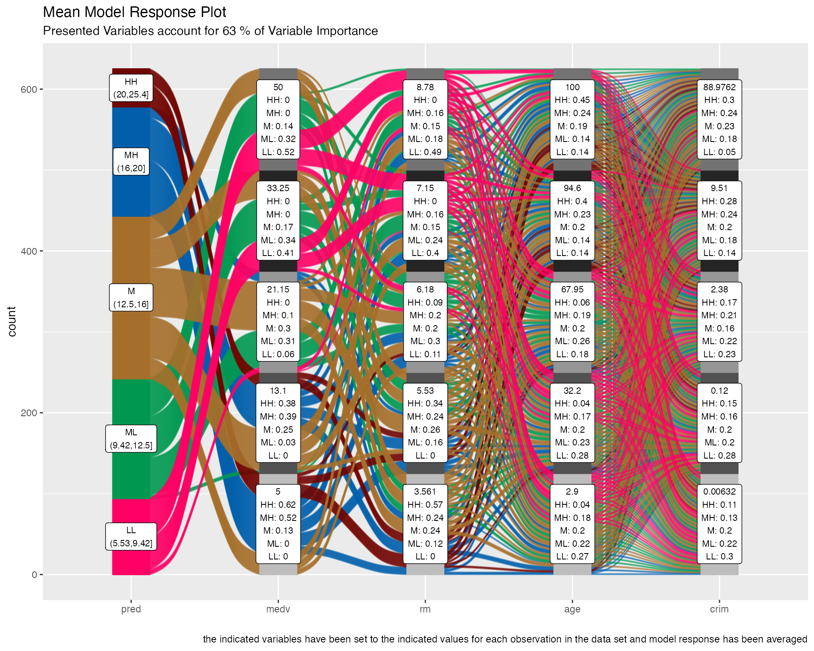

Visualising Model Response
Bjönr Koneswarakantha
Source:vignettes/model_response.Rmd
model_response.RmdIn this tutorial I want to show how you can use alluvial plots to visualise model response in up to 4 dimensions. easyalluvial generates an artificial data space using fixed values for unplotted variables or uses the partial dependence plotting method. It is model agnostic but offers some convenient wrappers for caret models.
Introduction
Taking a peek
When building machine learning models we are usually faced with a trade-off between accuracy and interpretability. However even if we tend to lean towards accuracy and pick a modelling method that results in nearly uninterpretable models we can still make use of model agnostic interpretation techniques that have been summarized in this excellent ebook Interpretable Machine Learning by Christoph Molnar.
Without getting to theoretical I personally always feel the urge to simply take a peek simulate some data and see how the model reacts a method described in here. In order to simulate data we can generate a a vector with a sequence of values over the entire range of a predictor variable of interest while setting all the others to their median or mode and use this artificial data space to obtain model predictions which we can plot against our variable of interest. An R package that will do this for you is (plotmo)[https://cran.r-project.org/web/packages/plotmo/index.html]. Instead of ranging over 1 predictor variable we can create a data grid using 2 predictor variables and plot the response as a third dimension. However this is as far as you can go in a conventional plot. Alluvial plots can line up much more than 3 dimensions on a plane next to each other only limited by the number of flows as it will get too cluttered when there are too many of them.
Which variables to plot
When using conventional model response plotting beeing limited two 2 variables we can simply resolve this by generating many plots and look at them one by one. Alluvial plots require a bit more attention and cannot easily be screened and compared since visually there is so much going on. Therefore I do not recommend to brute force it by simply creating a lot of random combinations of predictor variables and multiple alluvial plots but instead to focus on those that have the highest calculated feature importance. Feature importance values are natively provided by most modelling packages. So the question is how many can we plot and it turns out 4 features will usually result in well-interpretable plot.
Generating the data space
suppressPackageStartupMessages( library(tidyverse) )
suppressPackageStartupMessages( library(easyalluvial) )
suppressPackageStartupMessages( library(mlbench) )
suppressPackageStartupMessages( library(randomForest) )
suppressPackageStartupMessages( library(recipes) )
suppressPackageStartupMessages( library(earth) )We start by creating a model
data('BostonHousing')
df = as_tibble( BostonHousing )
m = randomForest( lstat ~ ., df )and looking at the importance features
| vars | imp |
|---|---|
| medv | 8246.4626 |
| rm | 3567.1643 |
| age | 2961.4537 |
| indus | 2252.2190 |
| crim | 2231.3382 |
| dis | 1802.2238 |
| nox | 1648.1508 |
| b | 703.9107 |
| tax | 628.1203 |
| ptratio | 446.1274 |
| rad | 201.8832 |
| zn | 117.3911 |
| chas | 111.0059 |
When generating the data space we cannot screen an infinite amount of values per variable but will have to limit ourselves to a fixed number. Then we want to create all possible combinations between these values which determines the number of flows. The visual limit for flows on an alluvial plot is somewhere around 1000 flows. Thus I recommend to go with 5 values which will result in 5 x 5 X 5 X 5 –> 625 combinations and the same number of flows. That also leaves some wiggeling room if one of the top 4 variables is a factor with more than 5 levels. get_data_space() will split the range of a variable into 3 and pick the median of each split and add the variable minimum and the maximum to the set.
dspace = get_data_space(df, imp
, degree = 4 # specifies the number of variables
, bins = 5 # the number of values per variable
)
knitr::kable( head(dspace, 10) )| medv | rm | age | indus | crim | dis | nox | b | tax | ptratio | rad | zn | chas |
|---|---|---|---|---|---|---|---|---|---|---|---|---|
| 5 | 3.561 | 2.9 | 0.46 | 0.25651 | 3.20745 | 0.538 | 391.44 | 330 | 19.05 | 5 | 0 | 0 |
| 5 | 3.561 | 2.9 | 4.27 | 0.25651 | 3.20745 | 0.538 | 391.44 | 330 | 19.05 | 5 | 0 | 0 |
| 5 | 3.561 | 2.9 | 9.90 | 0.25651 | 3.20745 | 0.538 | 391.44 | 330 | 19.05 | 5 | 0 | 0 |
| 5 | 3.561 | 2.9 | 18.10 | 0.25651 | 3.20745 | 0.538 | 391.44 | 330 | 19.05 | 5 | 0 | 0 |
| 5 | 3.561 | 2.9 | 27.74 | 0.25651 | 3.20745 | 0.538 | 391.44 | 330 | 19.05 | 5 | 0 | 0 |
| 5 | 3.561 | 32.2 | 0.46 | 0.25651 | 3.20745 | 0.538 | 391.44 | 330 | 19.05 | 5 | 0 | 0 |
| 5 | 3.561 | 32.2 | 4.27 | 0.25651 | 3.20745 | 0.538 | 391.44 | 330 | 19.05 | 5 | 0 | 0 |
| 5 | 3.561 | 32.2 | 9.90 | 0.25651 | 3.20745 | 0.538 | 391.44 | 330 | 19.05 | 5 | 0 | 0 |
| 5 | 3.561 | 32.2 | 18.10 | 0.25651 | 3.20745 | 0.538 | 391.44 | 330 | 19.05 | 5 | 0 | 0 |
| 5 | 3.561 | 32.2 | 27.74 | 0.25651 | 3.20745 | 0.538 | 391.44 | 330 | 19.05 | 5 | 0 | 0 |
Total rows in dspace: 625
dspace %>%
summarise_all( ~ length( unique(.) ) ) %>%
knitr::kable()| medv | rm | age | indus | crim | dis | nox | b | tax | ptratio | rad | zn | chas |
|---|---|---|---|---|---|---|---|---|---|---|---|---|
| 5 | 5 | 5 | 5 | 1 | 1 | 1 | 1 | 1 | 1 | 1 | 1 | 1 |
Generating model response
pred = predict(m, newdata = dspace)Plotting
The predictions will be binned as well into 5 bins. Binning options can be passed as a list via the params_bin_numeric_pred parameter.
p = alluvial_model_response(pred, dspace, imp
, degree = 4, bins = 5
, stratum_label_size = 2.8 )
p
We can see the binned range of predictions and explore by which variable combination they have been created by tracing the coloured flows. The stratum labels of the prediction variables indicate the value of the variable and which fraction of the flows of that colour (prediction variable bin range) pass through that stratum.
Marginal histograms
As well as for other easyalluvial plots we can add marginal histograms and as a bonus also the feature importance.
p_grid = add_marginal_histograms(p, data_input = df
, plot = F # plot only after adding feature importance
, scale = 50 # to increase distance between ridge plots, Default: 400
) %>%
add_imp_plot( p = p, data_input = df)
We can see the original distribution of the variables, the lines indicate the position of the values as picked by get_data_space(). When comparing the distribution of the predictions against the original distribution of lstat we see that the range of the predictions in response to the artificial dataspace do not cover all of the range of lstat. Which most likely means that all possible combinations of the 4 plotted variables in combination with moderate values for all other predictors will not give any extreme values. Which we can further explore, first we will need to check whether the model is capable of making predictions in the lower and upper ranges of lsat. We can use plot_hist() to only plot the distributions and add the prediction for the training data set using the pred_train parameter.
pred_train = predict(m)
plot_hist('pred', p, df
, pred_train = pred_train # pred_train can also be passed to add_marginal_histograms()
, scale = 50)
We see that the training prediction also do not completely cover all of the lstat range but more of it than the predictions from the artificial data space.
If we wanted to emphasize this we can bin the data space predictions on the basis of the training predictions. In this case it makes sense to increase the number of bins for the predictions in order not to loose resolution on the plot.
p = alluvial_model_response(pred, dspace, imp, degree = 4, bins = 7
, bin_labels = c("LLL","LL", "ML", "M", "MH", "HH", "HHH")
, pred_train = pred_train
, stratum_label_size = 2.8 )
plot_hist('pred', p, df, scale = 50)
p_grid = add_marginal_histograms(p, data_input = df
, plot = F # plot only after adding feature importance
, scale = 50 # to increase distance between ridge plots, Default: 400
) %>%
add_imp_plot( p = p, data_input = df)
What feature combinations are needed to obtain predictions in the lower and higher ranges of lstat?
We can add the training predictions to the training data and assign the variables not covered by the model response plot to bins. We can then create an alluvial plot over the entire training dataframe in order to trace the lstat ranges not covered by the model response alluvial plot above. Since we are only interested in those observations we remove all other flows from the plot by setting their color to NA.
breaks = c( min(pred_train) - 1,min(pred),max(pred),max(pred_train) + 1 )
df_inv = df %>%
select(-lstat) %>%
mutate( pred_train = pred_train
, pred_train = cut(pred_train, breaks) ) %>%
select( pred_train, one_of(imp$vars) ) # order by feature importance
p = alluvial_wide(df_inv, bin_labels = 'min_max'
, stratum_label_size = 3
, col_vector_flow = c('blue', NA, 'orange')
, colorful_fill_variable_stratum = F)
p_grid = add_marginal_histograms(p, df_inv)
We can see that for the upper ranges of lstat a pretty specific combination values is required from 8 feature variables from medv until tax only then begin the flows to scatter over the entire range of the following variables. The lower range values of lstat start to scatter at crim or dis. Interestingly there seems to be a set of houses that branches off from the other houses in the lower range of lstat predictions already at the third feature, age. We could potentially explore this further, as a reminder you can get the binned input data for each alluvial plot by calling p$data_key and trace the variables of interest.
caret wrapper
caret provides a uniformous interface for training and calling a lot of machine learning models as well as for calculating feature importance. easyalluvial provides a function that wraps the above described workflow into one single call. Note that feature importance values can be slightly different.
train = caret::train( lstat ~ .
, df
, method = 'rf'
, trControl = caret::trainControl( method = 'none' )
, importance = TRUE )
alluvial_model_response_caret(train, degree = 4, bins = 5
, stratum_label_size = 2.8)
Advantages
Model response alluvial plots can help us to get an immediate intuitive understanding how predictions of a certain range can be generated by the model. They can be understood by none-statistical stakeholders and invite the viewer to start exploring and question the decision making process of the model while also conveying an appreciation for the model complexity as flows branch out to the variables of lower feature importance.
Partial Dependence Plotting Method
When simulating artificial data space we need to be aware that we will create data space that is outside the feature distribution space of our original training data. In this example we could be creating houses that cannot exist as such maybe a 5 square meter appartment with 10 bedrooms. We have to keep this in mind when interpretating the plot. Moreover by setting all the none-plotted values to median/mode we might also be creating observations outside the possible feature distribution space but this will be hidden and not foreseeable even by somebody who has some subject matter expertise. Simply imagine how likely it would be if I measure a hundred different features of the inhabitants of a certain country how likely will it be that I find one person that is exactly the average for all of those measurements? So to alleviate this we can use the partial dependency plotting method:
Construct the data space as described above, but instead of setting all none-plotted variables to median/mode we set them to the values found in the first row of the training data.
Repeat 1. for each row
Use all data spaces to get model predictions
Average model predictions
Using this method we reduce the risk of simulating data outside the feature distribution space concerning the variables that are not plotted.
pred = get_pdp_predictions(df, imp, m, degree = 4, bins = 5)
alluvial_model_response(pred, dspace, imp, degree = 4
, method = 'pdp' # changes title and caption
, stratum_label_size = 2.8 )
thanks to the uniform modelling interface of caret alluvial_model_response_caret() can call get_pdp_predictions() directly.
alluvial_model_response_caret(train, degree = 4, bins = 5
, method = 'pdp'
, stratum_label_size = 2.8 )
A note on feature importance
Calculating feature importance in a dataset with strongly correlating variables will lead to inaccurate results. It usually means that two strongly correlating variables share the importance that would be accredited to them if only one of them was present in the data set. Further some feature importance calculation methods require the model to be trained with scaled, centered and potentially normalized (transformed to be more normally distributed) numerical variables in order to deliver meaningful results. We can use the recipes package to perform these tasks. Using the below described workflow we can create the artificial dataspace with untransformed numerical values which will give us more meaningful output.
# filter correlating variables recipe- ------------------------------
# caret tends to complain if recipe filters any variables, therefore
# we use two recipes
rec_filt_corrs = recipe(df, lstat ~ . ) %>%
step_corr( all_numeric()
, - all_outcomes()
, threshold = 0.7 ) %>%
prep()
df_filt_corrs = bake(rec_filt_corrs, df)
# transformation recipe --------------------------------------------
rec_trans = recipe( df_filt_corrs, lstat ~ .) %>%
step_center( all_numeric(), - all_outcomes() ) %>%
step_scale( all_numeric(), - all_outcomes() ) %>%
step_YeoJohnson( all_numeric(), - all_outcomes() ) %>%
prep()
# train and plot ---------------------------------------------------
set.seed(1)
train = caret::train( rec_trans
, df_filt_corrs
, method = 'earth'
, trControl = caret::trainControl( method = 'cv'
, search = 'random')
, tuneLength = 100)
pred_train = predict(train, df_filt_corrs)
p = alluvial_model_response_caret(train, degree = 4, bins = 5
, pred_train = pred_train
, stratum_label_size = 2.8
, pred_var = 'lstat')
p_grid = add_marginal_histograms(p, df, plot = F
, pred_var = 'lstat'
, scale = 50) %>%
add_imp_plot(p, df)
None-regression models
Works the same way.
df = select(mtcars2, -ids)
m = randomForest::randomForest( am ~ ., df)
imp = m$importance
dspace = get_data_space(df, imp, degree = 3)
pred = predict(m, newdata = dspace,type = 'response')
p = alluvial_model_response(pred, dspace, imp, degree = 3)
p
Limitations
- There is a loss of information when binning the numerical variables
- The combinations generated when making the grid might be outside the feature distribution space (generate combinations that are impossible)
- We only look at the combination of 4 features and disregard the others
To alleviate this you can reduce the complexity of the model by reducing features (take out correlating variables) or use additional model exploration methods such as classical PDPs, ALE plots, Shapely values, etc, …